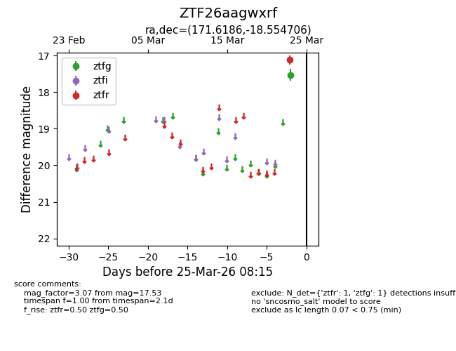
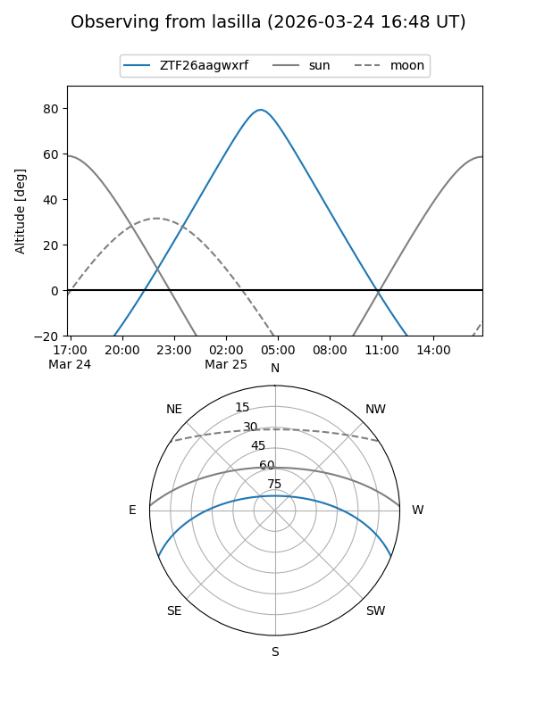
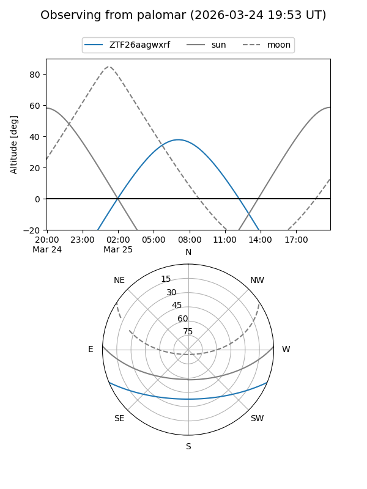

ZTF26aagwxrf
Target ZTF26aagwxrf at 2026-03-25 08:17
Aliases and brokers:
FINK: link
Lasair: link
ALeRCE: link
alt names
ZTF26aagwxrf (ztf,fink_ztf)
Coordinates:
equatorial (ra, dec) = 171.6186,-18.55471
equatorial (HMS+DMS) = 11:26:28.47,-18:33:16.94
galactic (l, b) = (276.3403,+39.88958)
Flags:
Photometry:
last ztfg=17.53, ztfr=17.12
1 ztfg, 1 ztfr detections
Lightcurve

Visibility


Additional plots